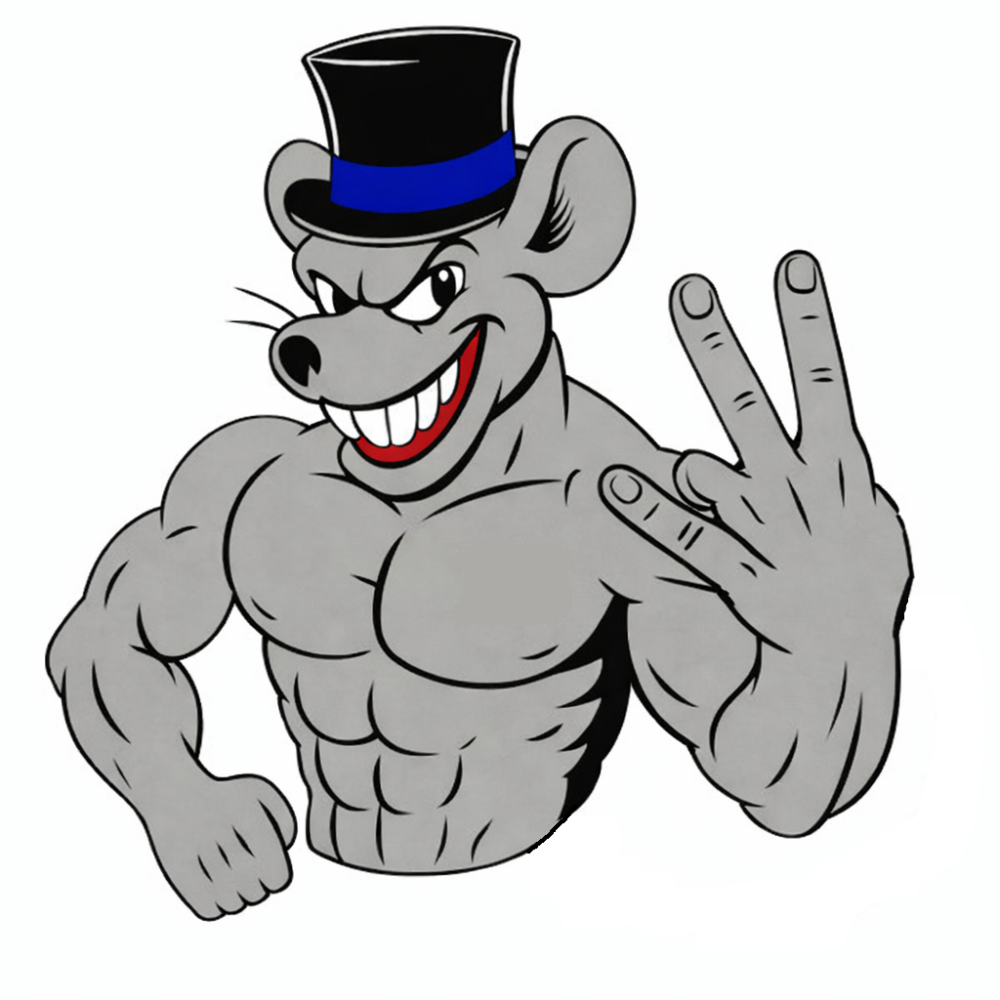

Gunter Otto Bienemann Junior é estudante por obrigação, mas programador por paixão. Conquistou uma bolsa na faculdade na base do foco, disciplina e provavelmente algumas boas noites mal dormidas.
Quando não está quebrando a cabeça com código (ou tentando entender por que o programa “não funciona"), ele divide seu tempo entre esportes — porque ninguém vive só de computador — e jogos online, onde a competitividade fala mais alto.
Seu objetivo atual? Simples: manter a bolsa, garantir um estágio na área e continuar evoluindo até virar aquele cara que resolve bug em 5 minutos enquanto os outros ainda estão reiniciando o PC.
No último ano do ensino médio, nós o 3°C — a Tropa do Rato — não era a sala favorita. Não era a mais organizada, nem a mais forte. Mas era a mais unida. Pouco antes dos interclasses, o 3°A, conhecidos como “Pecinhas”(nossos maiores rivais) e apontados como campeões gerais antes mesmo de começar, tentaram desmontar a gente: chamaram eu e o Samuel — peças importantíssimas para a sala — para mudar de turma. Seria o caminho fácil. O título praticamente garantido. O Samuel quase foi. Mas só iria se eu fosse. E foi ali que eu entendi: eu preferia perder com a minha sala do que ganhar com os pecinhas. Fiquei.
O interclasse começou com o futsal feminino. Chegamos à final. Contra quem? O 3°A. Lutamos, mas ficamos em segundo. Doeu. No dia seguinte, no vôlei, fomos até a final de novo — contra o 2°B, que já tinha eliminado a gente no ano anterior. O jogo foi decidido no “vai a 2”, ponto a ponto, coração acelerado. E, mais uma vez, segundo lugar. A sensação de bater na trave pela segunda vez seguida pesava.
Então veio o basquete. Ali era diferente. Eu, que dava a vida na quadra. O Neguin, estava voando. O Samuel jogava com alma. Ganhamos todos os jogos até a final contra o 2°B. E dessa vez não deixamos escapar. Jogamos com intensidade, raça e confiança. Quando o apito final soou, não foi só uma vitória — foi um grito preso que finalmente saiu: "CAMPEÕES". Caímos em lágrimas. Pela primeira vez, a Tropa do Rato finalmente tinha sido campeã.
Faltava só mais um passo: ganhar uma partida de futsal masculino contra o 2°A(sala fraca) e praticamente garantir o título geral. E aconteceu o inacreditável: Gols perdidos na cara, erros que nunca aconteciam… derrota. O silêncio foi pesado. Parecia que tudo tinha escapado das nossas mãos. Passamos o resto do dia fazendo contas, torcendo por resultados, tentando manter a esperança viva.
E no final, contra todas as previsões, a sala desacreditada foi campeã geral. A Tropa do Rato levantou o troféu. A sala que quase foi desmontada antes de começar venceu. E a favorita, que tentou me levar embora, ficou sem nada. Naquele dia eu entendi: lealdade pesa mais que facilidade. E vencer ao lado de quem esteve com você desde o começo tem um gosto que nenhum “atalho” no mundo consegue oferecer.

